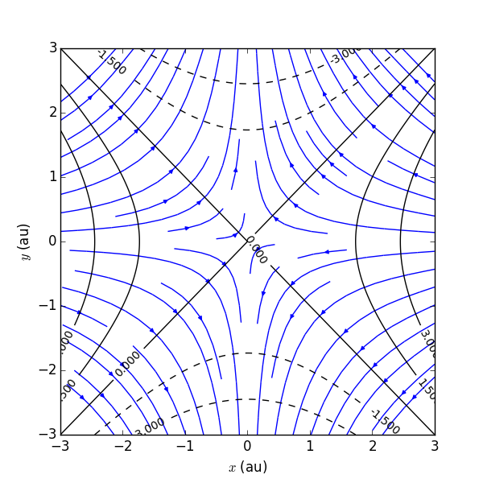

FFM234, Klassisk fysik och vektorfält - Föreläsningsanteckningar
Oct 3, 2017
8. Potentialteori
Konservativa fält och potentialer
Vi har definierat ett konservativt fält som ett fält \( \vec{F} \) sådant att $$ \begin{equation} \oint_C \vec{F}\cdot \mbox{d}\vec{r} = 0 \tag{1} \end{equation} $$ för varje sluten kurva \( C \). Enligt Stokes sats följer det nu att ett fält som har \( \vnabla \times \vec{F} = 0 \) överallt i ett enkelt sammanhängande område är konservativt. Vi har sedan antagit att vi kan skriva $$ \begin{equation} \vec{F} = - \vnabla \phi, \tag{2} \end{equation} $$ där \( \phi \) kallas för det konservativa fältets potential. Gäller då $$ \vnabla \times \vec{F} = 0 \, \Longleftrightarrow \, \vec{F} = - \vnabla \phi \, ?? $$ Nej, det har vi ännu inte visat! Vi har att \( \vec{F} = - \vnabla \phi \, \Rightarrow \, \vnabla \times \vec{F} = 0 \) eftersom \( \vnabla \times ( \vnabla \phi) = 0 \) (se nedan), men det omvända gäller inte per automatik. Vi har ännu inte visat att konservativa fält alltid kan skrivas som \( -\vnabla \phi \).
Bevis av \( \vnabla \times ( \vnabla \phi) = 0 \) mha indexnotation
Vi kan visa att \( \vnabla \times ( \vnabla \phi) = 0 \) mha indexnotation: Vektorn \( \left[ \vnabla \times ( \vnabla \phi) \right]_i = \epsilon_{ijk} \partial_j \partial_k \phi = 0 \) eftersom den resulterande summan med nio termer \( \sum_{j,k=1}^3 \) har två nollskilda som tar ut varandra. T.ex. för \( i=1 \) fås \( \partial_2\partial_3 \phi - \partial_3\partial_2 \phi = 0 \).
Definitionen av ett konservativt fält gör dock att vi kan definiera en potential från $$ \begin{equation} \int_{\vec{r}_1}^{\vec{r}_2} \vec{F} \cdot \mbox{d} \vec{r} = \phi\left( \vec{r}_1 \right) - \phi\left( \vec{r}_2 \right). \tag{3} \end{equation} $$ Notera tecknet på potentialskillnaden i HL. Det hade gått lika bra med det omvända, men just denna konvention stämmer överens med energitolkningen i klassisk mekanik.
Vi ser nu att förändringen av potentialen mellan punkterna \( \vec{r} \) och \( \vec{r} + \mbox{d}\vec{r} \) är $$ \begin{equation} \mbox{d}\phi = -\vec{F}\cdot \mbox{d}\vec{r}, \tag{4} \end{equation} $$ men denna förändring kan också skrivas som $$ \begin{equation} \mbox{d}\phi = \vnabla \phi \cdot \mbox{d}\vec{r}. \tag{5} \end{equation} $$ Det följer därmed att det finns en potential \( \phi \) så att det konservativa fältet \( \vec{F} \) kan skrivas $$ \begin{equation} \vec{F} = -\vnabla \phi. \tag{6} \end{equation} $$ Faktum är att \( \phi \) inte är entydigt bestämd. Man kan skapa en ny potential genom att addera en konstant till en potential: \( \phi \mapsto \phi + \phi_0 \).
Exempel: Arbete i klassisk mekanik
För ett konservativt kraftfält \( \vec{F} \) gäller att det uträttade arbetet längs en rörelsebana motsvarar en ökning av den kinetiska energin åtföljt av en motsvarade minskning av en potentiell energi så att den totala mekaniska energin \( E = T + V \) är konserverad.
(Comment 1: Notera att uträttat arbete kan vara negativt vilket isf innebär en minskning av den kinetiska energin och en ökning av den potentiella.)
Arbetet som uträttas längs en kurva \( C \) motsvaras av kurvintegralen $$ \begin{align} \int_C \vec{F} \cdot \mbox{d}\vec{r} &= \left\{ \begin{array}{l} \vec{F} = m \vec{a} = m \frac{\mbox{d}\vec{v}}{\mbox{d}t} \\ \mbox{d}\vec{r} = \vec{v} \mbox{d}t \end{array} , \quad \frac{\mbox{d}\vec{v}}{\mbox{d}t} \cdot \vec{v} = \frac{1}{2}\frac{\mbox{d}}{\mbox{d}t} (\vec{v} \cdot \vec{v}) \right\} \tag{7} \\ &= \frac{m}{2} \int_{t_A}^{t_B} \frac{\mbox{d}}{\mbox{d}t} (\vec{v} \cdot \vec{v}) \mbox{d}t = \frac{m v_2^2}{2} - \frac{m v_1^2}{2} = \delta T. \tag{8} \end{align}$$ Här har vi använt NII. Tidpunkterna \( t_A \) och \( t_B \) motsvarar start- respektive sluttiden för rörelsen.
Ett exempel på ett sådant konservativt kraftfält är gravitationskraften nära jordytan: \( \vec{F} = - m g \hat{z} \).
Med vår nuvarande kunskap skulle vi uttrycka detta som \( \vec{F} = -\vnabla \phi \), där vi alltså använder beteckningen \( \phi \) istället för \( V \). För vårt exempel finner vi att potentialen \( \phi(\vec{r}) = m g z \) uppfyller denna likhet.
Vidare uppfyller kraftfältet \( \vnabla \times \vec{F} = 0 \). Vi kontrollerar detta för vårt exempel: $$ \begin{vmatrix} \hat{x} & \hat{y} & \hat{z} \\ \frac{\partial}{\partial x} & \frac{\partial}{\partial y} & \frac{\partial}{\partial z} \\ \mbox{0} & \mbox{0} & -mg \\ \end{vmatrix} = 0 $$
Kurvintegralen $$ \int_C \vec{F} \cdot \mbox{d}\vec{r} = \phi\left( \vec{r}_A \right) - \phi\left( \vec{r}_B \right), $$ där \( A \) och \( B \) är kurvans start- respektive slutpunkt. Här finner vi att potentialskillnaden \( -\delta \phi = \phi(z_A) - \phi(z_B) = mg (z_A-z_B) \). Detta är alltså den negativa skillnaden i potentiell energi och vi får $$ \delta T = - \delta \phi \quad \Rightarrow \quad \delta(T+V) = 0. $$
Poissons och Laplaces ekvationer
Konservativa vektorfält är alltså rotationsfria, men de kan fortfarande ha nollskild divergens. Denna kallas ofta för källtäthet $$ \begin{equation} \rho(\vec{r}) = \vnabla \cdot \vec{F}, \tag{9} \end{equation} $$ och vi har stött på exempel där denna har tolkats i termer av elektrostatik och massflöde. Med \( \vec{F} = -\vnabla \phi \) får vi Poissons ekvation $$ \begin{equation} \vnabla \cdot \vnabla \phi(\vec{r}) = \Delta \phi(\vec{r}) = -\rho(\vec{r}), \tag{10} \end{equation} $$ Specialfallet av denna ekvation utan källa, dvs divergensfritt, ger Laplaces ekvation $$ \begin{equation} \Delta \phi(\vec{r}) = 0. \tag{11} \end{equation} $$ Kom ihåg att \( \Delta \) är Laplacianen vilken kan skrivas $$ \begin{equation} \Delta \phi = \left( \frac{\partial^2}{\partial x^2} + \frac{\partial^2}{\partial y^2} + \frac{\partial^2}{\partial z^2} \right) \phi, \tag{12} \end{equation} $$ i cartesiska koordinater. Den ser annorlunda ut i kroklinjiga koordinatsystem.
Kommentar
Notera att \( \vec{F} = -m g \hat{z} \) är divergensfritt och att potentialen \( \phi = m g z \) uppfyller Laplaces ekvation \( \Delta \phi = 0 \).
Notera att Poissons och Laplaces ekvationer är exempel på differentialekvationer. För att lösa dessa i ett område behöver man också veta randvillkor för fältet \( \phi \).
Vi kommer t.ex. se att (ett stationärt) temperaturfält uppfyller någon av dessa ekvationer (Laplaces ekvation om det inte finns en värmekälla). För att t.ex. räkna ut temperaturfältet inuti ett värmeisolerande fönster behöver vi veta randvillkor för fältet på glasets in- och utsida.
Olika tekniker för lösning av dessa ekvationer presenteras i kapitel 9.
Divergensfria fält
Kan man erhålla divergensfria fält från någon potential på liknande sätt som vi just gjorde för rotationsfria fält?
Vi betraktar ett divergensfritt fält \( \vec{G} \) $$ \vnabla \cdot \vec{G} = 0, $$ och nöjer oss med att konstatera att divergensfriheten uppenbarligen uppfylls om fältet kan skrivas $$ \begin{equation} \vec{G} = \vnabla \times \vec{A}. \tag{13} \end{equation} $$
(Kommentar 2: Visa detta om ni är osäkra. Gärna med indexnotation. $$ \vnabla \cdot (\vnabla \times \vec{A}) = \partial_i \epsilon_{ijk} \partial_j A_k, $$ Vilket är en summa med 27 termer, vara sex är nollskilda och dessa tar ut varandra parvis.)
Vektorfältet \( \vec{A} \) kallas då för en vektorpotential.
Standardexempel: Statiskt magnetfält
Ett statiskt magnetfält \( \vec{B}(\vec{r}) \) är divergensfritt och uppfyller \( \vec{B}(\vec{r}) = \vnabla \times \vec{A}(\vec{r}) \) där \( \vec{A} \) kallas för den elektromagnetiska vektorpotentialen.
Vi fann tidigare att skalära potentialer hade en invarians genom att vi kunde addera en konstant term \( \phi \mapsto \phi + \phi_0 \) utan att ändra fältstyrkan.
På samma sätt har vektorpotentialen en invarians $$ \begin{equation} \vec{A}(\vec{r}) \mapsto \vec{A}(\vec{r}) + \vnabla \Lambda(\vec{r}), \tag{14} \end{equation} $$ där \( \Lambda \) kallas för en Gaugeparameter och invariansen kallas för Gaugeinvarians.
Kommentar
Detta må verka som en kuriositet, men just Gaugeinvarians är av fundamental betydelse för vår teoretiska förståelse av elektromagnetiska, svaga och starka krafter.
Kommentar
Ofta använder man Gaugeinvariansen till att skapa en vektorpotential som är divergensfri. Dvs man väljer \( \Lambda \) så att \( \Delta \Lambda = -\vnabla \cdot \vec{A} \).
Rotationen kallas ofta för virveltäthet $$ \vnabla \times \vec{G} = \vec{j} \quad \Rightarrow \vnabla \times (\vnabla \times \vec{A}) = \vec{j}. $$ Vi använder sambandet \( \vnabla \times \left( \vnabla \times \vec{A} \right) = \vnabla \left( \vnabla \cdot \vec{A} \right) - \Delta \vec{A} \) vilket alltså ger $$ \Delta \vec{A} - \vnabla \left( \vnabla \cdot \vec{A} \right) = -\vec{j}. $$ Genom att välja Gaugeparametern så att \( \vnabla \cdot \vec{A} = 0 \) får vi Poissons ekvation för vektorpotentialen $$ \begin{equation} \Delta \vec{A} = -\vec{j}. \tag{15} \end{equation} $$
Potentialer för godtyckliga vektorfält
- Betrakta ett fält med både källor och virvlar, dvs \( \vnabla \cdot \vec{H} = \rho \neq 0 \) och \( \vnabla \times \vec{H} = \vec{j} \neq 0 \).
- Detta allmänna vektorfält kan vi dela upp i två delar \( \vec{H} = \vec{F} + \vec{G} \) där
- Dvs, fältet \( \vec{H} \) kan skrivas som summan av ett rotationsfritt fält \( \vec{F} \) och ett divergensfritt fält \( \vec{G} \) som representeras av potentialerna \( \phi \) och \( \vec{A} \).
Exempel: Stagnationsström konservativt hastighetsfält
Betrakta (det rotationsfria) hastighetsfältet som ges av potentialen $$ \phi(x,y) = \frac{A}{2}(x^2 - y^2), $$ där \( A \) är en positiv konstant. Hastighetsfältet blir $$ \vec{v} = -\vnabla \phi \quad \Rightarrow \left\{ \begin{array}{l} v_x = -A x \\ v_y = A y \end{array} \right. $$ Vi noterar att detta fält också är divergensfritt.
En fältbild (potential och fältlinjer) visas nedan. Notera att det finns områden där hastigheten är noll. Dessa kallas stagnationspunkter. Vi noterar också att fältlinjerna blir parallella med \( x \)- och \( y \)-axlarna när vi kommer tillräckligt nära. Vi kan därför tänka oss dessa som fasta väggar och att vårt hastighetsfält beskriver strömmen vid ett hörn.

I verkligheten kommer dock friktionen nära väggen att skapa virvlar, och vår rotationsfria approximation ger en sämre beskrivning.
Standardexempel på käll- och virvelfördelningar
Punktkälla med styrkan \( q \) i origo
- vektorfält
- rotationsfritt, men med en källa \( \rho=q\delta^3(\vec{r}) \). Fältet har en potential
Linjekälla på \( z \)-axeln med konstant styrka \( k \)
- vektorfält
- Motsvarande potential är
- Potentialen uppfyller Poissons ekvation:
Virveltråd på \( z \)-axeln med styrka \( J \)
- fältet
- Vektorpotentialen är (t.ex., med tanke på gaugeinvarians)
- Notera att denna vektorpotential uppfyller \( \vnabla\cdot\vec A=0 \), och därför ges virvelfördelningen av
- Poissons ekvation,
Randvärdesproblem
En lösning av t.ex. Laplaces ekvation \( \Delta \phi = 0 \) ger upphov till integrationskonstanter. För att entydigt bestämma lösningen behövs därför randvillkor för fältet.
Rita
Skissa gärna hur ett fält som uppfyller Laplaces ekvation beter sig. Titta på ett fält \( \phi(x,y) \) och använd Taylorexpansion för att teckna beteendet nära en punkt \( \vec{r}_0 \). Villkoret \( \frac{\partial^2\phi}{\partial x^2} + \frac{\partial^2\phi}{\partial y^2} = 0 \) ger en andragradskurva $$ \phi(\vec{r}) = c_0 + c_x (x-x_0) + c_y (y-y_0) + c_{xy} (x-x_0)(y-y_0)+ \frac{c_{ii}}{2}(x-x_0)^2 - \frac{c_{ii}}{2}(y-y_0)^2, $$ där t.ex. \( c_0 = \phi(\vec{r}_0) \), \( c_x = d\phi/dx(\vec{r}_0) \), etc. Det viktiga är alltså att expansionen slutar med den kvadratiska termen och att dessa är lika, men motriktade, i \( x \)- och \( y \)-led.
Exempel: Lösningar till Laplaces ekvation
Figure 1: Lösningen (\( \phi = xy \)) till Laplaces ekvation i två dimensioner på ett kvadratiskt område med randvillkor enligt figuren.

Figure 2: Lösningen (\( \phi = x^2 - y^2 \)) till Laplaces ekvation i två dimensioner på ett cirkulärt område med vinkelberoende randvillkor enligt figuren.

Två exempel på lösningar till Laplaces ekvation i ett område med givna randvillkor visas i figurerna 1 och 2.
Kommentar
Att ta reda på precis "hur mycket" villkor, och av vilket slag, man bör lägga på fältet på randen \( \partial V \) är ju ett matematiskt problem, men det matematiska svaret på frågan bör också vara ett svar inom fysik, så att en given fysikalisk förutsättning ger en unik lösning (fältkonfiguration).
- Vårt randvärdesproblem består av den partiella differentialekvationen \( \Delta\phi=-\rho \) samt några randvillkor.
- Vilka randvillkor ger en unik lösning? Eller hur skall "bra" randvillkor formuleras?
- Antag att \( \phi_1 \) och \( \phi_2 \) båda är lösningar.
- \( \psi=\phi_1-\phi_2 \), uppfyller Laplaces ekvation, \( \Delta\psi=0 \).
- En trivial lösning, \( \psi=\mathrm{konstant} \), innebär att lösningen till Poissons ekvation är unik.
Betrakta nu identiteten $$ \vnabla\cdot(\psi\vnabla\psi)=\vnabla\psi\cdot\vnabla\psi+\psi\Delta\psi =\vnabla\psi\cdot\vnabla\psi=|\vnabla\psi|^2, $$ som gäller när \( \Delta\psi=0 \). Tillämpa nu Gauss sats på vektorfältet \( \psi\vnabla\psi \). $$ \int_V|\vnabla\psi|^2dV=\int_{\partial V}\psi\vnabla\psi\cdot d\vec S. $$
- VL är positivt semidefinit, och noll endast om \( \psi = \mathrm{konstant} \).
- Randvillkor som gör HL till noll innebär därför det vi vill.
(Comment 4: Den andra faktorn är "normalderivatan" vid randen, alltså riktningsderivatan i normalens riktning.)
(Comment 5: Lösningen till Laplaces ekvation är trivial (konstant) om den ena eller den andra är noll på randen.)
Dirichlets randvillkor:
$$ \psi = 0 \mathrm{~på~} \partial V \quad \Rightarrow \quad \psi = 0 \mathrm{~i~} V $$ Detta ger att $$ \phi|_{\partial V}=f, $$ där \( f \) är en funktion på randenNeumanns randvillkor:
$$ (\vnabla\psi) \cdot \vec n=0 \mathrm{~på~} \partial V \quad \Rightarrow \quad \psi = \mathrm{konstant} \mathrm{~i~} V $$ Detta ger att $$ (\vnabla\phi)|_{\partial V}\cdot\vec n=g, $$ där \( g \) är en funktion på randen.Sammanfattning:
Poissons ekvation i volymen \( V \) med någon källfördelning \( \rho \) har en unik lösning (sånär som på en ointressant konstant) för dessa två typer av randvillkor.